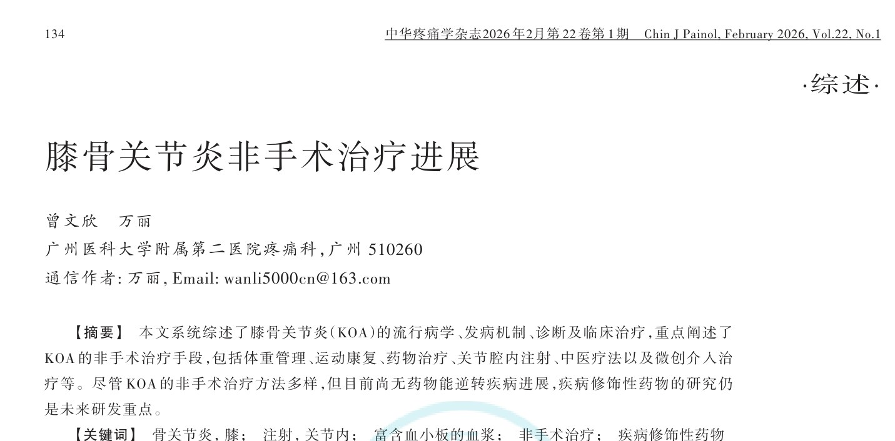
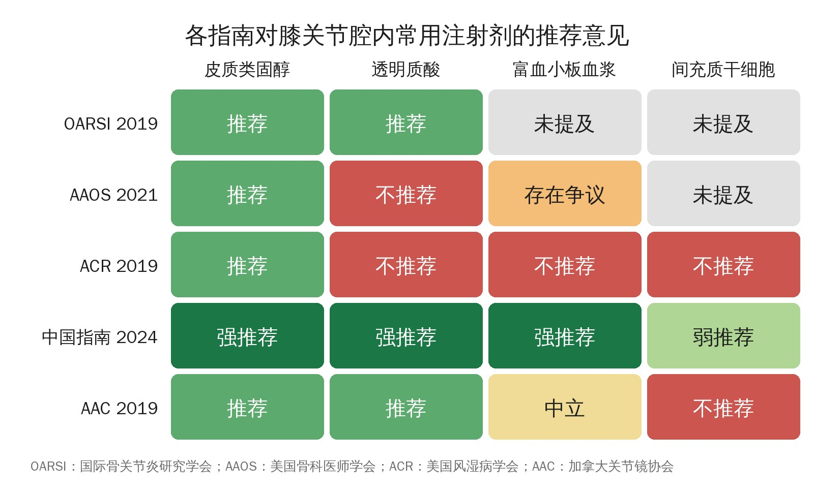

🔖原文首页（中华疼痛学杂志 2026 年第 22 卷第 1 期）
📚 文献卡片
▪ 题目：膝骨关节炎非手术治疗进展
▪ 作者：曾文欣 · 万丽（通信作者）
▪ 机构：广州医科大学附属第二医院疼痛科
▪ 期刊：中华疼痛学杂志
▪ 年卷期：2026;22(1):134-141
▪ DOI：10.3760/cma.j.cn101658-20250902-00151
▪ 文章类型：综述
▪ 关键词：骨关节炎，膝；注射，关节内；富含血小板的血浆；非手术治疗；疾病修饰性药物
膝骨关节炎（KOA）是一种与年龄相关的退行性关节疾病，全球患病率高且持续上升；在我国，KOA 发病率高于髋关节炎，以老年女性为主。治疗遵循阶梯化、个体化原则，非手术治疗安全经济，占据重要地位。但目前尚无药物能预防或减缓疾病进展，疾病修饰性骨关节炎药物（DMOADs）成为研究热点。
本文由疼痛科医生撰写，系统梳理了 KOA 的体重管理、运动康复、中医疗法、药物、关节腔注射和微创介入等非手术治疗手段。
| 治疗 | 要点 |
|---|---|
| 体重管理 | 体重增加往往提示病情恶化；适当减重可减少疾病进展和功能恶化 |
| 运动康复 | 有氧、肌力和平衡训练；股四头肌肌力训练最重要；八段锦、太极拳改善疼痛效果突出 |
| 中医疗法 | 推拿；针灸可持续改善疼痛和功能 3～6 个月，电针镇痛效果最好；温针、艾灸 |
| 药物 | 口服 NSAIDs 为一线；有胃肠/心血管风险者优先外用 NSAIDs；阿片类获益有限；辣椒素可替代外用 NSAIDs |
| 关节腔注射 | 激素起效快但仅 1～6 周；透明质酸疗效有争议；PRP 6～12 个月优于透明质酸但制备不统一；干细胞仍在研究阶段 |
| 微创介入 | 膝神经射频（膝上内、上外、下内侧）缓解顽固性疼痛；腰交感神经射频属探索性；关节镜清理、关节腔灌洗 |
一句话概括：减重和运动（尤其股四头肌训练）是基石，药物和注射以缓解症状为主，目前还没有能真正逆转病程的药物。
• KOA 是累及整个关节的疾病，除软骨外还影响滑膜、肌腱、肌肉、韧带、软骨下骨和脂肪组织
• 它是关节组织修复与破坏失衡引起的主动动态改变，而非传统认为的被动退行性或磨损性疾病
• 主要机制：软骨降解、软骨下骨重塑、异位骨和骨赘形成、关节囊肥大、滑膜炎症
• 新发现：细胞衰老、低度慢性炎症、新血管形成三者相互作用（衰老细胞诱发炎症，促血管生成因子驱动低度炎症），共同导致疼痛和结构损伤
满足 (1) + 其他任意 2 条即可诊断：
• (1) 近 1 个月内反复膝痛
• (2) 年龄 ≥50 岁
• (3) 晨僵 <30 分钟
• (4) 活动时有骨擦音（感）
• (5) 站立或负重位 X 线片示关节间隙变窄、软骨下骨硬化或囊性变、关节边缘骨赘形成
• 高体重指数人群增加使 KOA 病例增加约 20%；系统回顾显示体重增加往往提示病情恶化，适当减重可减少疾病进展和功能恶化
• 《中国膝骨关节炎非手术治疗专家共识（2023 版）》推荐有氧运动、肌力训练和平衡训练
• 股四头肌肌力训练最为重要：增强膝关节稳定性，促进滑液循环，改善软骨营养
• 《中国膝骨关节炎康复治疗指南（2023 版）》建议日常平地行走的活动强度应达到世界卫生组织推荐的健康有益水平
• 中医练功：易筋经、太极拳、八段锦、五禽戏均能改善情绪和生活质量；网状荟萃分析中，八段锦改善僵硬和身体功能最好，八段锦和太极拳改善疼痛最佳
• KOA 属中医“骨痹”，病机为气滞血瘀、经脉不通，治疗重在温经散寒、行气活血、通络止痛
• 中药：辨证论治，内服方剂或中成药，或熏洗、敷贴、离子导入外治
• 推拿：点按、拿捏等手法改善肌张力和柔韧性、促进血液循环，缓解疼痛和僵硬
• 针灸：降低环氧合酶 2、前列腺素 E2，抑制 IL-1β、IL-6、TNF-α，可在治疗结束后 3～6 个月持续改善疼痛和功能，安全性好；不同针灸技术都有效，电针镇痛效果最好，比普通针刺更能降低 TNF-α
• 温针适用于寒湿痹阻证（疼痛重着，遇冷加剧，得温则减）；艾灸可能通过调节 NF-κB 通路、抑制炎症发挥作用
• NSAIDs：口服是常用方法，长期使用需关注胃肠道和心血管风险；有风险者，OARSI 强烈推荐优先外用 NSAIDs（双氯芬酸凝胶、布洛芬乳膏、氟比洛芬贴剂等）；微针经皮给药正在探索
• 阿片类：对疼痛和功能的改善临床意义有限，剂量越大不良反应越多；仅在常规治疗无效时使用，老年人和免疫力低下者慎用
• 辣椒素：TRPV1 受体激动剂，使伤害感受器“去功能化”；可减轻疼痛长达 3 个月，疗效与外用 NSAIDs 相当，可能有局部烧灼感
关节腔注射可提高局部生物利用度、减少不良事件，但注射本身的安慰剂效应可能强于外用或口服给药，评价真实疗效需要设计严谨的随机对照试验。

🔖表1 重绘：各指南对膝关节腔内常用注射剂的推荐意见（按原文表 1 数据中文重绘）
• 皮质类固醇：抑制炎症级联反应，减少急性疼痛发作；疗效多在 1～6 周内明显，长期获益不明确
• 透明质酸：补充滑液中降解的透明质酸；部分指南仍推荐，但高质量荟萃分析显示与安慰剂相比效应量接近零，疗效有争议
• 富血小板血浆（PRP）：生长因子促进软骨修复、抗炎；欧洲 ESSKA 共识认为可作为一线注射选择；多项研究显示 6～12 个月的疼痛和功能改善优于透明质酸。少白细胞 PRP 可能更有优势，高浓度 PRP（如 1000×10⁹/L）促进软骨细胞增殖。但部分大样本 RCT（如 RESTORE 试验）显示 PRP 与安慰剂差异无统计学意义——制备工艺和注射方案亟需标准化
• 联合注射：激素 + 透明质酸在 2～52 周的疼痛缓解优于单用透明质酸，但中重度患者与单用激素无差异，长期疗效都不佳；PRP + 透明质酸的结论不一致
• 间充质干细胞：一项脂肪源性干细胞 RCT 中，12 个月时疼痛评分从约 6.7 降到 2.6，并延缓 MRI 上的进展；但仍处于临床研究阶段，暂不推荐常规应用
• 臭氧：改善疼痛和功能，4、12 周时与激素相当，20 和 40 μg/ml 浓度疗效无差异，但不如 PRP
• 新方向：铁螯合剂去铁胺（抑制软骨细胞铁死亡）、缓释特立帕肽水凝胶（促进软骨再生）——目前均为基础或早期研究
• 射频：连续射频（高温不可逆阻断痛觉信号）和脉冲射频（短脉冲，不造成神经结构损伤）
• 膝神经射频：仅处理膝上内侧、膝上外侧和膝下内侧神经即可减轻疼痛；隐神经连续或脉冲射频也有效
• 腰交感神经射频：基于“腰膝同治”理念，可能改善膝关节血供并影响疼痛传导，但缺乏高级别证据，属探索性治疗
• 关节镜可诊断并清理病变组织，但对严重磨损的软骨无效；关节腔灌洗可清除炎症介质和碎屑，灌洗后再注射效果更好
• 基础治疗以体重管理和运动康复为基石，运动以股四头肌训练为主，辅以八段锦、太极拳
• 药物：口服 NSAIDs 一线，有风险者用外用 NSAIDs，辣椒素可作替代
• 注射：激素快而短，透明质酸有争议，PRP 中长期优于透明质酸但需标准化，臭氧可作补充，干细胞暂不常规使用
• 未来方向：开发真正能延缓或逆转病程的 DMOADs；标准化 PRP 等生物制剂；开展大样本、长期随访的高质量 RCT
• 文章性质：叙述性综述。摘要称“系统综述”，但没有交代检索策略、纳入标准和质量评价，不属于方法学意义上的系统综述
• 亮点：覆盖面广，把中西医、药物、注射和介入放在一起比较，并用表格汇总了中外 5 部指南对关节腔注射的推荐，实用性强
• 运动康复篇幅偏少：作为指南公认的核心治疗，文中只用了一段，没有给出运动类型、强度、频次等具体处方；“股四头肌训练最为重要”引用的是 2003 年的一项小样本研究
• 引用与表述有出入：透明质酸“高质量荟萃分析显示效应量接近零”引用的是美国风湿病学会指南；“PRP 优于臭氧”引用的是一篇文献可视化（计量学）分析；皮质类固醇段把长效混悬剂归入“即释类固醇”，前后矛盾
• 表与正文不一致：表 1 显示中国指南（2024）对间充质干细胞为“弱推荐”，而正文结论写“暂不推荐常规应用”
• 证据等级混杂：去铁胺、特立帕肽水凝胶等仍是动物或早期研究，与临床疗法并列介绍，阅读时需区分
① 基石：减重 + 运动，股四头肌训练为核心，可加八段锦、太极拳
② 药物：外用 NSAIDs 优先（尤其有胃肠/心血管风险者），口服 NSAIDs 短期用，阿片类尽量少用
③ 注射：激素快但只管 1～6 周；透明质酸有争议；PRP 中长期优于透明质酸但需标准化；干细胞暂不常规
④ 中医：针灸（尤其电针）、推拿可作为补充
⑤ 介入：顽固性疼痛可考虑膝神经射频
★ 注意：注射的安慰剂效应很强；目前还没有能逆转病程的药物
欢迎关注骨科康复小黄公众号，获取更多物理治疗的专业知识！
📄参考文献：
曾文欣, 万丽. 膝骨关节炎非手术治疗进展[J]. 中华疼痛学杂志, 2026, 22(1): 134-141. DOI: 10.3760/cma.j.cn101658-20250902-00151.
原文无插图；首页为原文截图，表 1 按原文数据重绘，其余表格为编者整理，仅用于学术交流。原文版权归中华医学会所有。